QGIS plugin · Version 1.8.1
LandXML Road & Terrain GIS Tools
User Guide and Technical Manual
The 1.4 guide covered conversion of LandXML to GIS layers. Versions 1.5 to 1.8 turn the plugin into a review and reporting tool for road designs:
QGIS 4 support, Inspect LandXML, explicit units and CRS handling, OpenRoads Designer terrain and breaklines, profile labels and map overlays.
Profile Viewer dock (click a road to see existing vs design), profile, corridor and TIN cut/fill quantities, mass haul and side-slope areas for grassing.
Name dropdowns and automatic surface choice, cross-section sheets (PDF/HTML/PNG), cross-sections in the viewer, and the Road Design Report.
Geometric Design Review against Kenya RDM 1.3 (2025) or AASHTO 2018: phasing, sight distance, curves, grades, superelevation, design speed changes and barrier warrants.
Recommended PVIs and curve lengths written as a Civil 3D "Create Profile from File" text file and as LandXML.
Correct placement of station-relative cross-sections, hidden TIN triangles excluded, true arc-length stationing on curves and spirals.
Install the plugin, export a suitable LandXML file from the design software, decide how its coordinates map to your GIS, and check the file before converting anything.
LandXML Road & Terrain GIS Tools is a QGIS Processing provider with a dockable profile viewer. It reads LandXML 1.0–1.2 exported by Autodesk Civil 3D, Bentley OpenRoads Designer and other design packages, and turns terrain and road design data into GIS layers, quantities, drawings and design-review reports. It needs no Python packages beyond those QGIS ships (NumPy, GDAL/OGR), and it never edits the source file.
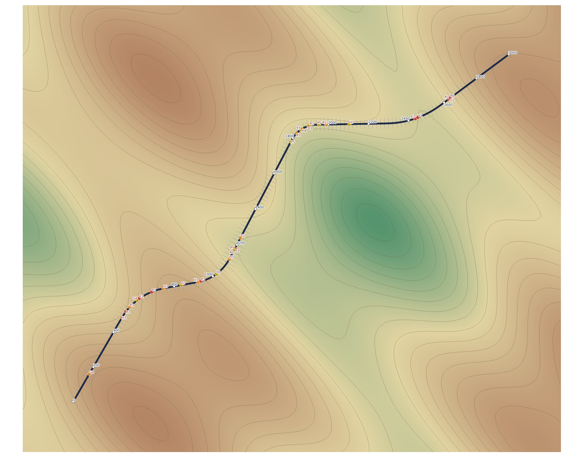
| Toolbox group | Tools |
|---|---|
| Utilities | Inspect LandXML · Road Design Report |
| Terrain conversion | LandXML TIN to GeoTIFF |
| Vector extraction | Extract LandXML Alignments to Lines |
| Road design extraction | Extract LandXML Profiles · Create 3D Road Centerlines · Extract LandXML Cross-Sections · Create Alignment Station Points · Export Complete Road Design to GeoPackage |
| Surface extraction | Extract TIN Surface Boundary · Extract LandXML Feature Lines · Extract LandXML Breaklines |
| Earthworks and quantities | Profile Cut/Fill Analysis · Corridor Section Quantities · Surface Cut/Fill (TIN Difference) · Cross-Section Sheets and Report |
| Design review | Geometric Design Review (Phasing, Sight Distance, Standards) |
| Outside the Toolbox | LandXML Profile Viewer dock and the Pick Alignment Profile on Map button (menu Plugins → LandXML Road & Terrain) |
Use Plugins → Manage and Install Plugins → Install from ZIP. The ZIP contains one folder, landxml_tin_to_geotiff. This is the plugin's permanent folder name, kept since 1.4 so that new versions replace old ones; installing a copy under a different folder name gives two plugins side by side.
The plugin can only use what the export contains. Decide what you need before exporting, and keep one export per review so results can be traced.
| To use | Include in the export |
|---|---|
| Terrain, DEM, contours, TIN difference | Surfaces (TIN). Civil 3D marks triangles hidden by a surface boundary as invisible; the plugin excludes them. |
| Alignments, stations, 3D centrelines | Alignments with their geometry (lines, curves, clothoid spirals). |
| Profiles, Profile Viewer, cut/fill | The design profile (layout profile) and the existing-ground surface profile of each alignment. |
| Corridor quantities, section sheets, barrier and sight checks | Sample-line cross-sections with the existing-ground and corridor surfaces sampled, and the corridor shapes and links (pavement layers, Datum). Enable cross-section export in the LandXML export settings. |
| Design review by speed | Design speeds: in Civil 3D set them in Alignment Properties → Design Criteria (speed stations) before exporting. They are written as SpeedStation features. |
| Superelevation diagram and checks | Alignment superelevation (Civil 3D writes transition stations and full rates). |
In Civil 3D the command is Output → Export to LandXML; in OpenRoads Designer use the LandXML export. The plugin does not read DWG or DGN files.
Coordinate handling is explicit in every tool that writes map geometry. The plugin never guesses a CRS or transformation; a CRS declared in the LandXML is shown for reference only.
| Coordinate interpretation | Use when |
|---|---|
| Use stored coordinates | The stored values are already easting, northing in the output CRS. |
| Swap X / Y | The file stores northing first. Civil 3D does this, so most Civil 3D exports need this option. |
| Apply X / Y offset | A known translation (for example a false origin) must be added. |
| Swap X / Y + offset | Both of the above. |
| 2-D Helmert (similarity) | A known translation, rotation and scale relate the design grid to the map grid. |
| Reproject from source CRS | The stored coordinates are valid in a known CRS that differs from the output CRS. You must select the source CRS. |
Output CRS is always chosen by you. Use the same interpretation and CRS for every layer of a project, and check one feature against known survey control before converting a whole design.
Units. Metres, international feet and US survey feet are kept distinct. When a file declares a horizontal unit, the output CRS must use the same unit or the tool stops. Vertical units are never inferred from horizontal ones; if the file does not declare them, the log says so.
Inspect LandXML (Utilities) reads the file without converting anything and reports: the producing software and version, horizontal and vertical units, declared CRS, an axis-order warning, surfaces with point and face counts, alignments, design and surface profiles, cross-sections, breaklines, feature lines, coordinate bounds, the elevation range and any warnings. It can save the report as JSON for the project record.
Use it to confirm that the file holds what you expect (for example that cross-sections are present before running corridor tools) and to decide on the coordinate interpretation.
Every name field is an editable dropdown filled from the chosen file and refreshed when the file changes. You can also type: matching ignores case and accepts a unique part of a name, so eg finds EG and ogl finds OGL-LOT_REV 0. An unknown name is reported with the list of names available.
Leave surface names blank to let the tool decide from evidence in the file; the choice is written to the log:
ProfSurf.Roadway, preferring the datum (bottom) surface for earthworks.SurfVolume) if the file records one.Turn terrain, alignments, profiles and sections into GeoPackage, GeoTIFF and 3D vector layers for mapping and analysis.
For a first import, run Export Complete Road Design to GeoPackage. In one pass it writes an engineering GeoPackage and, optionally, a DEM and contours.
| Parameter | Default | Guidance |
|---|---|---|
| Coordinate interpretation, Output CRS | — | As verified in section 4. |
| Alignment / TIN surface | blank = all | Pick from the dropdowns to limit the export. |
| DEM resolution | 5 | Pixel size in map units. Finer cells do not add detail missing from the TIN. |
| Contour interval | 5 | 0 skips contours. |
| Alignment segment length | 5 | Densification of curves and spirals. |
| Station interval | 20 | Station points at whole multiples of the interval. |
| Profile interval | 5 | Sampling of profile graph lines. |
| Include … toggles | on | Turn off layers you do not need. |
| Layer | Contents |
|---|---|
alignments | One line per alignment with length and start/end stations. |
alignment_elements | Each line, curve and spiral with direction, radius, curve and spiral length. |
centerlines_3d | 3D centreline over the range covered by the design profile. |
profiles, profile_controls | Profile graph lines and VPI/VPC/VPT controls in station/elevation graph coordinates (no map CRS). |
station_points | Points with station and bearing. |
cross_sections | Section lines (3D) for every sampled surface, placed along the alignment. |
feature_lines, breaklines | Design linework with source names, codes and IDs. |
surface_boundary | Outer edges of each TIN. |
*_DEM.tif, *_Contours.gpkg | Float32 DEM and contour lines (optional). |
LandXML TIN to GeoTIFF rasterizes one TIN surface by linear interpolation inside each triangle. Choose the surface, the pixel size and a NoData value outside the elevation range. Triangles flagged invisible (i="1", written by Civil 3D for triangles hidden by a boundary) are left as NoData, so the raster follows the surface boundary instead of filling holes and outer concavities.
Extract TIN Surface Boundary writes the outer edges of the visible triangles as lines.
Extract LandXML Profiles writes profile graph lines and control points (VPI from the file, VPC and VPT computed for each parabolic curve). Labels show the station (0+000.00 for metric files), elevation, incoming and outgoing grades and K. A vertical exaggeration scales the plotted Y while the elevation attribute keeps the source value.
To see the profile next to the road in the map, add the Map profile lines output with the same coordinate interpretation and CRS as the alignment. The profile is drawn beside the alignment at the chosen offset (positive left, negative right). These are schematic graphics, not surveyed features.
K is the curve length divided by the algebraic difference in grade in percent. Flat curves have no finite K.
Extract LandXML Cross-Sections handles both forms found in LandXML:
PntList3D) keep their coordinates.CrossSectSurf/PntList2D offset–elevation pairs, as Civil 3D writes for sample lines) are placed along their alignment as 3D lines, one per sampled surface. Versions before 1.6 placed these at false coordinates.Extract LandXML Breaklines and Extract LandXML Feature Lines keep the design linework with its source names, descriptions, codes and IDs. OpenRoads breaklines carry codes and IDs but no names; the plugin keeps those without treating IDs as names.
Look at the design the way a reviewer does: long-sections and cross-sections on demand, earthworks quantities and report-ready drawings.
Every HTML report is laid out for A4 printing. Open it in Chrome or Edge, choose Print → Save as PDF and untick Headers and footers. The report prints its own title and page numbers, keeps chart colours and legends, keeps each heading with its chart, repeats table headers on every page and starts each alignment on a new page. The Road Design Report opens with a table of the alignments it contains.
Press Pick Alignment Profile on Map and click an alignment, or any layer with an alignment_name or alignment field (station points, cut/fill segments, cross-sections). The dock opens that alignment's existing-ground and design long-section with the clicked chainage marked.
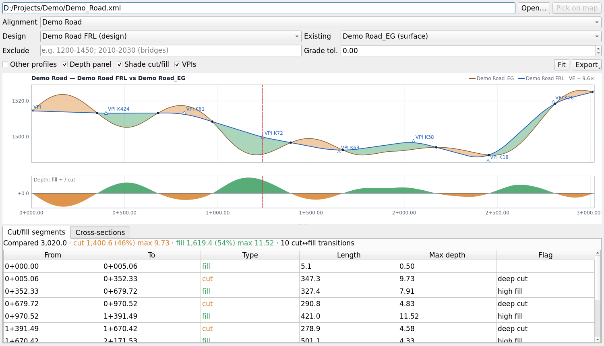
1200-1450; 2010-2030.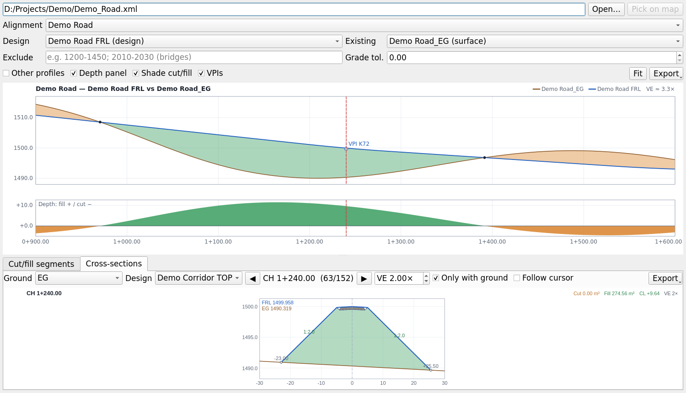
Layers created by the plugin remember their LandXML file in the QGIS project, so clicking them opens the right file. For other layers the viewer asks for the file once.
Profile Cut/Fill Analysis (Existing vs Design) compares the design profile with the existing-ground profile. Depth is design − ground (positive fill). Every breakpoint is kept and zero crossings are found exactly.
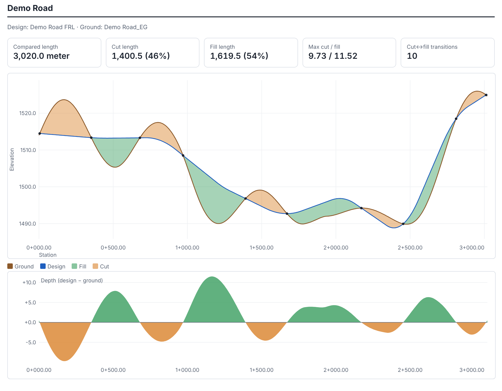
Outputs: a station table at any interval, cut/fill segments with length, maximum and mean depth and high fill / deep cut flags (default 3 m), transition points on the map, and the report. A formation width adds a level-section estimate of volumes and side-slope areas for early design when no corridor sections exist; it ignores cross-fall, pavement depth and ditches.
Corridor Section Quantities works from the station-relative sections exported from sample lines.
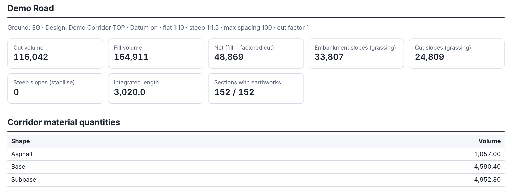
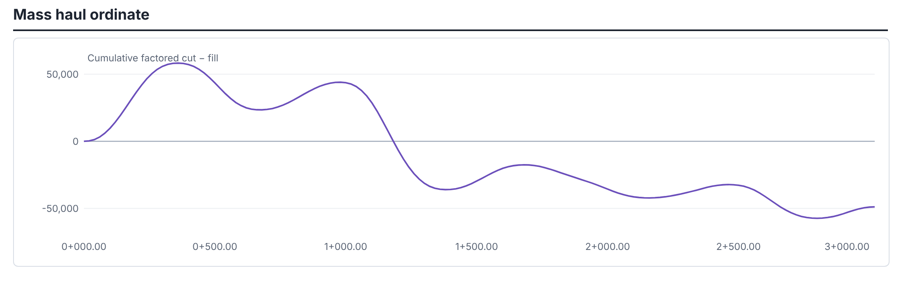
Sections farther apart than the maximum spacing (default 100) and excluded ranges are not integrated; the report lists what was skipped. No curvature correction is applied.
Grids two TINs on a shared raster and writes compare − base as a GeoTIFF styled orange (cut) to green (fill), with cut, fill and net volumes. Leave both names blank to use a recorded Civil 3D volume-surface pair, or existing ground against the corridor datum surface. When the file contains a SurfVolume for the same pair, the Civil 3D volumes are printed beside the grid result for comparison.
Plots corridor sections as multi-page PDF sheets (A4, A3 or A1; 1–12 sections per sheet) with a title block and legend, an HTML report with a section table and drawings, and one PNG per section. A station range and interval select what to plot, for example every 50 m between 10000 and 12000.
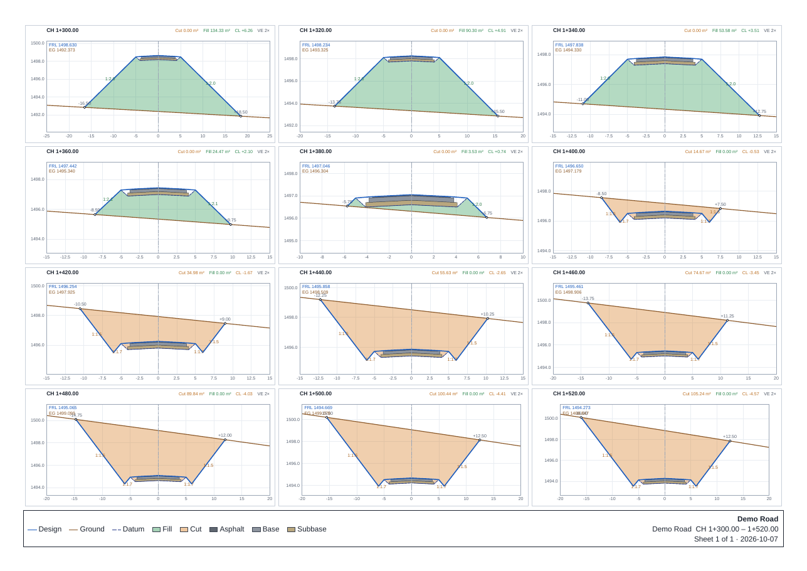
Road Design Report writes one HTML page per file with a section per alignment. Print it to PDF from a browser for a paginated report; each alignment starts on a new page.
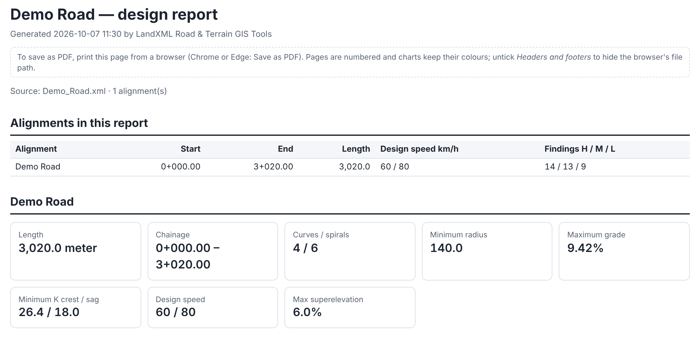
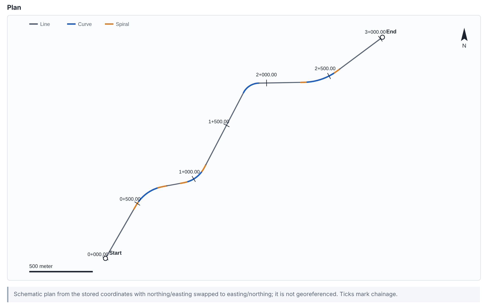
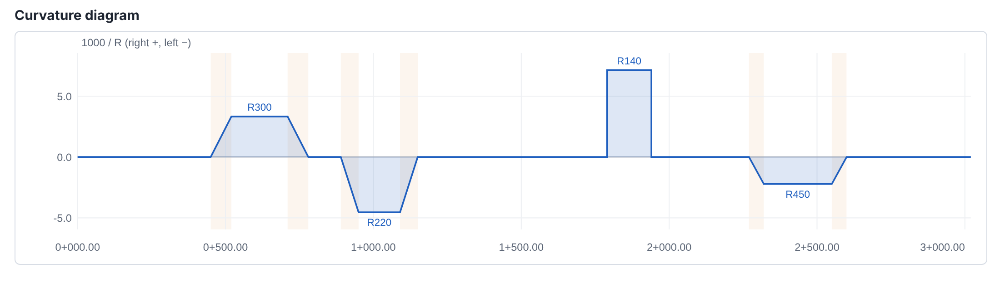
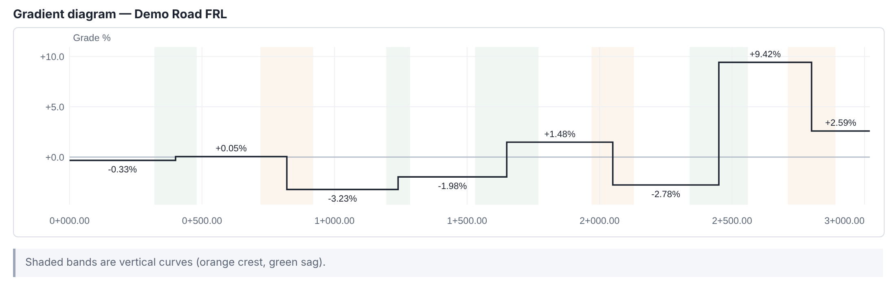
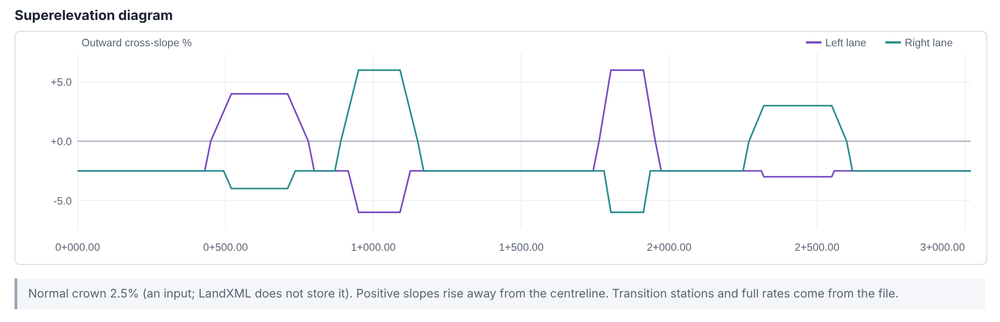
The report also tabulates horizontal elements, vertical controls and superelevation transitions. Long alignments are split into strips (default 5,000 m per row). Select a Design standard to add the geometric design review (Part D) to each alignment.
Check the horizontal and vertical alignment, superelevation and roadside against a design standard, and get computed changes to apply in the design software.
Geometric Design Review reads the alignment, design profile, existing ground, superelevation, design speeds and corridor sections from the LandXML, applies the tables of the selected standard, and reports each problem with its location, the value found, the value required, the table it comes from and a recommendation. Where a fix is a profile change, it computes new PVI stations, elevations and curve lengths.
The review is limited to geometric design under the designer's control: alignment, profile, superelevation, side slopes and the design-speed plan. Pavement, drainage, structures, intersections and traffic operations are out of scope.
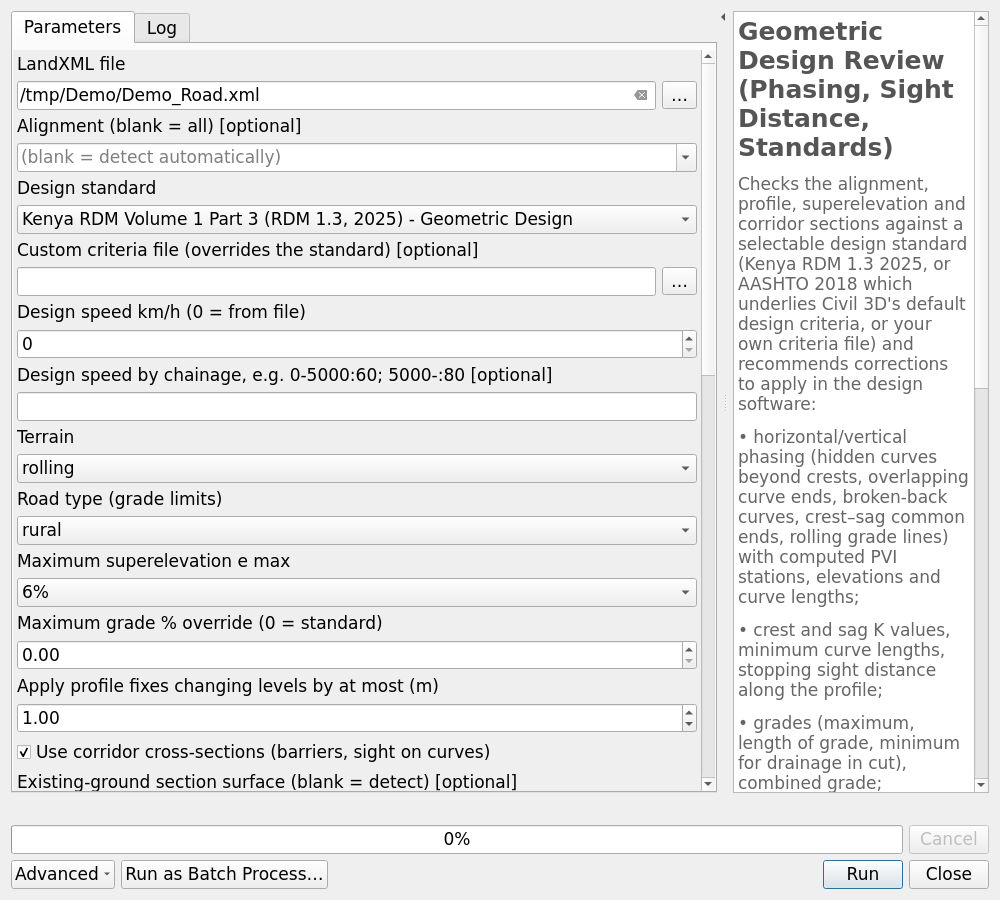
| Parameter | Meaning |
|---|---|
| Design standard | Kenya RDM 1.3 (2025) (default) or AASHTO 2018. See section 25. |
| Custom criteria file | A JSON criteria file that overrides the standard. |
| Design speed (0 = from file) | 0 follows the speeds recorded in the file (recommended). A value applies one speed to the whole road. |
| Design speed by chainage | Overrides the file, e.g. 0-5000:60; 5000-:80. |
| Terrain, Road type | Select the maximum-grade row (flat, rolling, mountainous, escarpment; rural or urban). |
| Maximum superelevation e max | 4, 6 or 8 %; selects the minimum-radius and superelevation tables. |
| Maximum grade override | Required for AASHTO grade checks (AASHTO limits depend on road class). |
| Apply profile fixes … at most (m) | Fixes changing any level by more than this are reported but not applied to the recommended profile (default 1 m). |
| Use corridor cross-sections | Enables barrier warrants and sight distance on curves. |
| Section surfaces | Ground and design section surfaces (blank = detect). |
| Outputs | Findings table, findings as map points (needs a CRS), HTML report, recommended profile as Civil 3D text and as LandXML. |
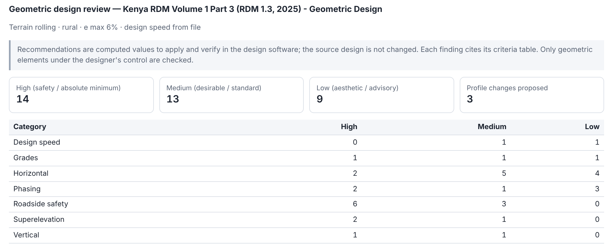
| Severity | Meaning |
|---|---|
| High | Below an absolute minimum or a safety requirement: stopping sight distance, minimum K or radius, barrier warrant, abrupt speed change, hidden curve. |
| Medium | Below a desirable or standard value, or needing an engineering assessment. |
| Low | Aesthetic or advisory: appearance of the alignment, preferred values, short sections. |
Most checks depend on design speed, so the review follows the speeds recorded along each alignment: Civil 3D SpeedStation features (set in Alignment Properties → Design Criteria before export) or Roadway DesignSpeed records. Where two speeds share a station, the later entry applies, as in Civil 3D.
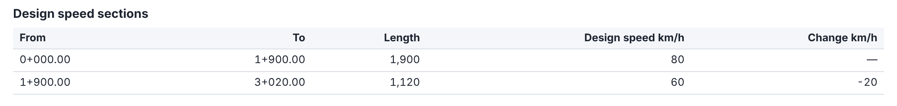
The speed plan itself is checked (Kenya RDM 1.3 §3.10.3, §5.5, §5.14):
| Code | Check and recommendation |
|---|---|
| D1 | Speed step above 20 km/h (high), or 10–20 km/h (low; acceptable but not preferred). The recommendation lists intermediate sections in 10 km/h steps with chainages, placed on the faster side so the slower section's design remains valid, e.g. "90 km/h over 0–1,000; 80 km/h over 1,000–2,000; 70 km/h over 2,000–3,000". |
| D2 | A transition section shorter than 1 km, or a short section between two sections of the same speed (speed oscillation). A short faster section should be merged; elements in a short slower section should be designed for the approach speed. |
| D3 | A curve sharper than the faster speed allows within 1 km after a speed reduction (in either direction of travel). Move the speed change, add an intermediate section or increase the radius. |
| Code | Check | Kenya RDM 1.3 reference |
|---|---|---|
| V0 | Grade change without a vertical curve | Tables 6.1, 6.3, 6.4 |
| V1 | Crest or sag K below minimum (with the length needed) | Table 6.1 (crest), Table 6.4 (sag) |
| V2 | Vertical curve shorter than the minimum length, including small grade changes (A < 0.5 %: L ≥ 2V) | Table 6.3, S7.3 |
| G1–G2 | Grade above the absolute or desirable maximum for terrain and road type | Table 6.5 |
| G3 | Grade longer than its critical length | Table 6.6 |
| G4 | Grade flatter than 0.5 % in cut (drainage) | S6.5.4 |
| S1 | Stopping sight distance along the profile | Tables 3.13, 3.16 |
| S2 | Sight distance on horizontal curves blocked by cut slopes | Table 3.16 |
| H0–H1 | Radius below the absolute floor or the minimum for speed and e max | S5.8, Table 5.1 |
| H2–H3 | Missing transition spiral, or spiral parameter A too small | Table 5.8, Eq. 5.4 |
| H4–H5 | Curve too short, or too long | Table 5.5 |
| H6 | Broken-back curves (short straight between same-direction curves) | S5.6, S7.8 |
| H7–H8 | Short straight between reverse curves; long straight | Table 5.4 |
| H9 | Isolated sharp curve after a long straight (needs 1.5 × minimum radius) | S5.4 |
| E1–E3 | Superelevation missing, below the required rate, or above e max | Tables 5.9–5.11 |
| E4 | Superelevation run-off too short | Table 5.7, S5.9 |
| E5 | Combined grade √(g² + e²) too steep | S6.5.3 |
| P1–P7 | Alignment phasing (section 22) | Chapter 7 |
| R1 | Embankment barrier warrant (section 23) | S12.6.5, Figure 12.4, Table 12.6 |
| D1–D3 | Design speed changes (section 20) | S3.10.3, S5.5, S5.14 |
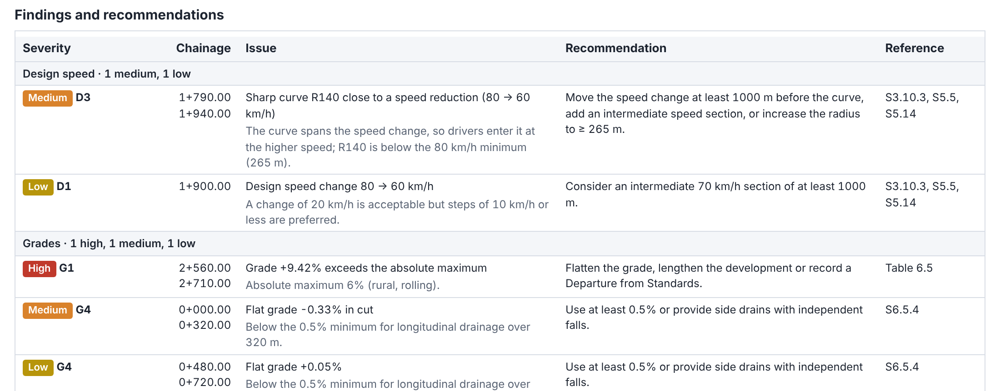
Phasing compares horizontal and vertical curves so the road reads clearly to drivers and looks right. Following RDM 1.3 Chapter 7, the review reports:
| Code | Situation |
|---|---|
| P1 | The start of a horizontal curve is hidden beyond a crest, within stopping sight distance of the crest: the driver cannot see the change of direction in time. |
| P2 | A crest or sag overlaps both ends of a horizontal curve without matching it. |
| P3 | A vertical curve overlaps only one end of a horizontal curve. |
| P4 | A short crest inside a sharp horizontal curve. |
| P5 | Horizontal and vertical curves separated by less than max(SSD/2, 30 m): separate them further or make them concurrent. |
| P6 | Rolling grade line: a crest and a sag within one horizontal curve; keep a constant grade through the curve. |
| P7 | Crest and sag without the 60–100 m of constant grade between them (rolling grade line). |
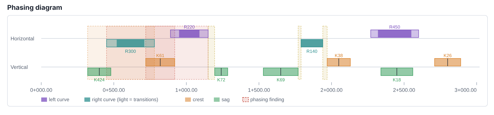
For each phasing, K or curve-length finding the tool tries these profile changes and keeps the feasible one that changes levels least:
Each candidate must meet minimum K, avoid overlapping neighbouring curves and stay within grade limits. Fixes that change any level by more than the cap are reported with the change they need (redesign that section) and are not applied.
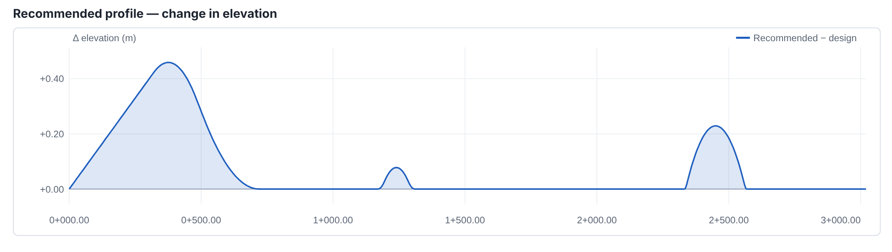
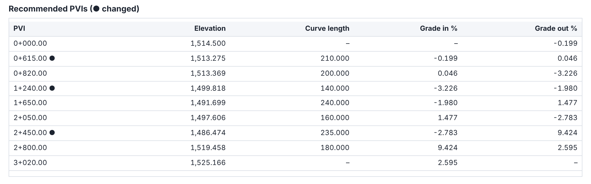
Barriers (R1). From each corridor section the tool measures the embankment height from the shoulder edge to the toe and the side-slope ratio on each side. Under RDM 1.3 a barrier is warranted where the fill is at least 6 m high and steeper than 1:3 (the example stated with Figure 12.4); fills of 3–6 m steeper than 1:3, and fills of 6 m or more with slopes between 1:3 and 1:4, are reported for assessment against the chart. Adjacent sections are grouped into runs, and the recommendation gives the barrier extent per side with the run-out length of Table 12.6 added at each end.
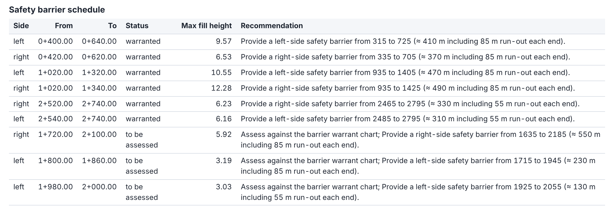
Sight on curves (S2). On horizontal curves the review computes the sight-line offset needed for stopping sight distance and checks whether existing ground beyond the cut daylight line rises above the sight line (at the height set by the standard) on the inside of the curve. Only ground beyond daylight counts, so excavated material does not create false obstructions.
The recommended profile is written in two forms. Both are complete profiles: the original PVIs with the applied changes.
0.000 1514.500 615.000 1513.275 210.000 820.000 1513.369 200.000 1240.000 1499.818 140.000 … 3020.000 1525.166
.txt file. Each line is station, elevation and, for intermediate PVIs, the parabolic curve length.The LandXML output contains the original alignment geometry with the recommended profile as a new ProfAlign. Import it with Insert → LandXML into a drawing to inspect it, or load it into the Profile Viewer next to the original.
Two standards ship with the plugin as editable JSON files in its criteria folder:
To use another standard, copy one of the files, change id and name, edit the tables and select it as Custom criteria file. Tables keyed by design speed are interpolated linearly between tabulated speeds and held constant beyond the ends. Only metric criteria are accepted.
| Key | Content |
|---|---|
ssd, ssd_by_grade | Stopping sight distance by speed, optionally by grade. |
eye_height, object_height, sightline_height | Heights for sight-distance checks. |
k_crest, k_sag, min_vc_length | Vertical curve minimums. |
max_grade, max_grade_length, min_grade_percent | Grade limits by road type and terrain; critical lengths. |
min_radius, side_friction | Minimum radius by e max, or computed from side friction. |
superelevation_rates | Required rate by radius and speed for each e max (NC, RC or a rate). |
runoff_min, transition_required_radius, spiral_a_coefficient | Run-off and transition rules. |
tangent_min_factor, tangent_max_factor, same_direction_tangent_min | Straight lengths. |
crest_sag_gap, small_grade_change | Phasing and small-grade-change rules. |
barrier | Warrant height and slope, assessment band, run-out by speed, minimum length. |
speed_change | Preferred and maximum speed steps, minimum transition length. |
references | Table numbers printed with each finding. |
How results are computed, what each output contains, what LandXML content is supported, and how the plugin has been validated.
Chainage is true arc length along lines, circular curves and clothoid spirals (curvature varying linearly with length). On a 36 km test alignment the end chainage matches the declared length to 0.1 mm; earlier chord-based stationing drifted by 0.33 m.
Design profiles are evaluated from PVIs and symmetric parabolic curves: z = zVPC + g1x + (g2 − g1)x²/2L. K = L / |A| with A in percent. Existing-ground profiles are linear between points; gaps in coverage are kept as gaps.
Section areas come from the polygon between the ground and design lines (to the Datum where used). Volumes use average end areas, V = (A1 + A2)/2 · d, between sections no farther apart than the maximum spacing. The mass-haul ordinate is the running sum of factored cut minus fill. Side-slope areas are the sloped lengths from hinge to daylight, averaged between adjacent sections and multiplied by their spacing.
Each cell centre takes the elevation of the visible triangle containing it, by barycentric interpolation. TIN difference grids both surfaces on the same cells and sums (compare − base) × cell area over cells where both exist.
The profile is sampled every 2 m. From each station, in both directions, the line from the driver's eye (eye height above the road) to an object (object height) is extended until the road surface rises above it; the distance reached is compared with the SSD required at that speed and grade.
For each curve the required rate is read from the table for the chosen e max, using the next smaller tabulated radius and the next higher speed column (the conservative reading); NC and RC mean normal crown and reverse crown. Where a standard has no table, e = V²/127R − f.
Fill height is measured from the shoulder edge to the toe of the embankment; the side-slope ratio is horizontal over vertical between them. Runs of warranted sections are merged and extended by the run-out length.
| Field | Content |
|---|---|
alignment_name | Alignment. |
severity, category, code | High/Medium/Low; Vertical, Grades, Sight distance, Horizontal, Superelevation, Phasing, Roadside safety, Design speed; finding code. |
sta_start, sta_end, from_label, to_label | Chainage range (numbers and formatted labels). |
side | left/right for barriers and curve sight. |
issue, detail, recommendation, reference | Text of the finding and the criteria table. |
value, required | Value found and value required (units as stated in the detail). |
alignment_name, design_profile, ground_profile, station, station_label, kind, design_elev, ground_elev, depth (design − ground).
station, section_name, ground_surface, design_surface, cut_area, fill_area, centre_depth, left_daylight, right_daylight, left_hinge, right_hinge, fill_slope_len, cut_slope_len, steep_len, datum_used, and one m_<shape> area field per corridor shape.
side, kind (fill/cut/mixed), sta_start, sta_end, fill_slope_area, cut_slope_area, steep_area, plan_area.
| Element | Support |
|---|---|
Surface/Definition (TIN) | Points and faces; invisible faces excluded; several surfaces per file. |
SurfVolume | Recorded Civil 3D volumes shown beside TIN difference results. |
Alignment/CoordGeom | Line, Curve, clothoid Spiral. Other spiral types and disconnected elements are reported, not drawn. |
ProfAlign | PVI and ParaCurve. Circular vertical curves are reported as unsupported. |
ProfSurf | Existing-ground and other surface profiles, with gaps. |
CrossSects | Absolute PntList3D and station-relative PntList2D sections; DesignCrossSectSurf shapes, links and Datum. |
Superelevation | Transition stations and full rates (two-lane rotation about the centreline assumed). |
Feature name="SpeedStation", Roadway/DesignSpeed | Design speeds by station. |
Breaklines, feature lines | Geometry with names, codes and IDs. |
Not supported: station equations, pipe networks, COGO points and plan features, DWG/DGN files, curvature correction of volumes, intersection and passing sight distance. XML is parsed with a hardened parser that refuses DTDs and entity expansion.
Project names are withheld; the validation notes are in docs/earthworks-validation.md in the repository. Validation of the plugin is not survey-control validation of a particular project: check placement and levels against control.
| Symptom | Check |
|---|---|
| Geometry in the wrong place or mirrored | Coordinate interpretation (Civil 3D usually needs Swap X / Y), offsets, CRS. |
| "Unit does not match the CRS" | Choose an output CRS in the unit the file declares (metres, feet or US survey feet). |
| Alignment element skipped | The element does not match its declared length or connect to its neighbour; check the export. |
| No cross-sections | The export has no sample-line sections, or only template data. Run Inspect LandXML. |
| Section surfaces not identified | Enter the ground and design section surface names from the dropdowns. |
| "The file records no design speed" | Define design speeds in Civil 3D before export, or enter a speed or ranges. |
| Very many findings | Check that the design speed and terrain match the road; use speed ranges where terrain changes. Read the category summary first. |
| Grade checks missing under AASHTO | Enter a maximum grade. |
| Cannot find the Profile Viewer | It is not in the Processing Toolbox: use Plugins → LandXML Road & Terrain or the plugin's toolbar button; the panel opens along the bottom of the window. |
| Report PDF shows a file path at the top or bottom of each page | Untick Headers and footers in the browser's print dialog; the report prints its own title and page numbers. |
| Profile Viewer opens the wrong file | Use Open… in the dock; layers from other sources are remembered per layer. |
| Complete Road Design stops | The GeoPackage already exists; choose a new folder. |
Key values of the bundled criteria files. The files contain further tables (superelevation rates, critical grade lengths, run-off) and the source of each value.
| Design speed km/h | 40 | 50 | 60 | 70 | 80 | 90 | 100 | 110 | 120 |
|---|---|---|---|---|---|---|---|---|---|
| SSD, level (m) — T3.16 | 40 | 55 | 70 | 85 | 100 | 120 | 140 | 165 | 190 |
| K crest — T6.1 | 5 | 10 | 17 | 30 | 45 | 67 | 100 | 140 | 185 |
| K sag — T6.4 | 9 | 14 | 19 | 25 | 32 | 40 | 50 | 60 | 70 |
| R min, e max 6 % (m) — T5.1 | 50 | 85 | 130 | 185 | 265 | 355 | 465 | 595 | 755 |
| Barrier run-out (m) — T12.6 | — | — | 55 | — | 85 | — | 105 | 120 | — |
| Maximum grade % (desirable / absolute) — T6.5 | Flat | Rolling | Mountainous | Escarpment |
|---|---|---|---|---|
| Rural | 3 / 5 | 4 / 6 | 6 / 8 | 7 / 9 |
| Urban | 3 / 5 | 6 / 8 | 8 / 10 | 8 / 10 |
Other values: eye height 1.05 m, object height 0.2 m (T3.13); minimum grade 0.5 %; combined grade 10 %; straights 6V to 20V m (4 km at 100 km/h and above); same-direction straights ≥ 200 m; constant grade of 60–100 m between crest and sag; barrier warrant 6 m fill steeper than 1:3; speed steps ≤ 20 km/h (10 preferred) with ≥ 1 km transitions.
| Design speed km/h | 40 | 50 | 60 | 70 | 80 | 90 | 100 | 110 | 120 |
|---|---|---|---|---|---|---|---|---|---|
| SSD (m) — T3-1 | 50 | 65 | 85 | 105 | 130 | 160 | 185 | 220 | 250 |
| K crest — T3-35 | 4 | 7 | 11 | 17 | 26 | 39 | 52 | 74 | 95 |
| K sag — T3-37 | 9 | 13 | 18 | 23 | 30 | 38 | 45 | 55 | 63 |
| Side friction f — T3-7 | 0.23 | 0.19 | 0.17 | 0.15 | 0.14 | 0.13 | 0.12 | 0.11 | 0.09 |
Other values: eye height 1.08 m, object height 0.6 m; minimum vertical curve length 0.6V m; minimum radius from V²/127(e + f); default e max 8 %; barrier warrant thresholds are configurable defaults (3 m fill steeper than 1:3) without run-out lengths.
LandXML Road & Terrain GIS Tools is free software released under the GNU General Public License version 2 or later, without warranty. Civil 3D is a trademark of Autodesk, Inc.; OpenRoads Designer is a trademark of Bentley Systems, Incorporated. The design criteria summarise published standards for convenience; the source documents govern.